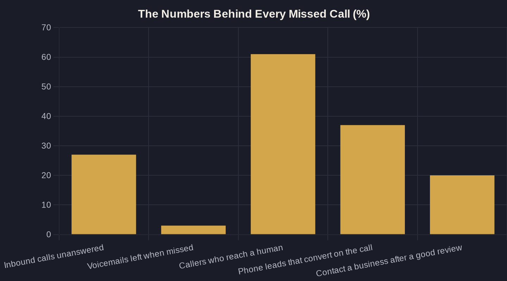

AI Receptionists: Never Miss Another Lead Call
In home services, more than a quarter of inbound calls go unanswered — and almost none of those callers ever call back. Here is the Owner's Math on fixing your phone with an AI receptionist.
Key takeaways
- A missed call is usually a lost job, not a delayed one — in home services about 27% of calls go unanswered and under 3% of voicemails get a message.
- Speed wins: responding within an hour makes you nearly 7x more likely to reach a decision-maker than waiting even an hour longer.
- An AI receptionist answers 24/7, qualifies, and books — capturing demand you already paid to create instead of buying more.
- The cheapest lead is the one already calling you; a flat monthly fee beats losing the 37% of phone leads that convert on the call.
- Pair it with missed-call text-back, lead follow-up, and review management for a front desk that never sleeps.
Why an AI Receptionist for Small Business Pays for Itself
For most local service businesses, the phone is still where the money is. Someone has a burst pipe, a toothache, or a roof leak, and they call. The problem is how many of those calls never get answered: in home services, roughly 27% of inbound calls go unanswered, and fewer than 3% of callers sent to voicemail ever leave a message. A missed call is almost never a delayed lead — it is a lost one.
It gets worse when you look at the calls that do get picked up. Across an analysis of more than 60 million phone calls, only 61% of people who dialed a business actually reached a live person — so nearly 4 in 10 callers hit a dead end before they ever talk to you. Every one of those is someone you already paid to generate.
An AI receptionist for small business closes that gap. It answers every call on the first ring, day or night, has a real conversation, qualifies the caller, and either books the appointment or routes the call to a person. You stop paying to make the phone ring and then letting it ring out.
The Real Cost of "We'll Call Them Back"
Owners tend to assume a missed call can be saved with a callback an hour later. The data says otherwise. In a study of 2,241 U.S. companies, firms that responded to a lead within an hour were nearly 7 times more likely to have a meaningful conversation with a decision-maker — and more than 60 times more likely than firms that waited a full day.
Speed is not a nicety; it is the whole game. By the time you call back, your prospect has often dialed the next three businesses on the list and booked with whoever picked up first. This is the core of Owner's Math: the lead you already paid for only converts if you respond while intent is hot.
An AI receptionist removes the lag entirely. There is no callback queue, no "they're at lunch," no after-hours black hole — the first response happens during the call the customer chose to make.
What an AI Receptionist Actually Does
Strip away the hype and the job is concrete. A good AI receptionist for small business answers 24/7, greets callers in your business's name, asks the qualifying questions you would ask, checks your calendar, and books the slot — then drops a clean summary into your CRM so nothing falls through the cracks.
In practice, that means handling the repeatable work that eats your front desk:
- Answering every call instantly, including nights, weekends, and while you are on a job
- Qualifying the caller — what they need, where they are, how urgent it is
- Booking the appointment directly into your calendar
- Capturing name, number, and notes so no detail is lost
- Routing the genuinely complex call to a human with full context
This is not a far-off experiment anymore. 58% of small businesses now use generative AI, up from 40% in 2024 and 23% in 2023 — adoption has more than doubled in two years, and front-desk call handling is one of the most common first uses.
Be honest about the edges, too. An AI receptionist is excellent at the repeatable 80% — hours, pricing ranges, booking, intake — and should hand the genuinely unusual call straight to a person. The goal is not to remove people; it is to stop losing the calls nobody had time to answer.
The Owner's Math on One Missed Call
Run the numbers on a single missed call. Say a booked job is worth $400 and, per the call data above, 37% of phone leads convert during the call. Every 100 calls you were quietly missing is worth roughly 37 booked jobs — about $14,800 — that you already paid to create through ads, SEO, and reviews.
Against that, a flat monthly fee is a rounding error. That is the whole point of tracing a dollar end to end: the cheapest lead you will ever get is the one already calling you, because there is no new acquisition cost — only the cost of answering.
The chart below shows where those leads leak today. Each gap — unanswered calls, callers who never reach a human, the near-zero voicemail rate — is a place an AI receptionist plugs the hole without spending another dollar on traffic.
| Setup | After-hours coverage | Speed to first response | What it quietly misses | Cost shape |
|---|---|---|---|---|
| Voicemail only | Passive only | Hours to days, if ever | Under 3% of callers leave a message | Cheap, leaks nearly every lead |
| In-house receptionist | No — business hours | Seconds, when free | Lunch, overflow, nights, weekends | Salary plus benefits |
| Human answering service | Often | Seconds to minutes | Rigid scripts, no calendar booking | Per-minute or per-call, scales up |
| AI receptionist | Yes, 24/7 | First ring, every call | Rare edge cases needing a human | Flat monthly, scales flat |

AI Receptionist vs. Your Other Options
An AI receptionist for small business is not your only choice, and it is worth seeing it next to the alternatives honestly. Voicemail is cheap and leaks almost everything. An in-house receptionist is great while they are at the desk and unavailable nights, weekends, lunches, and overflow. A human answering service covers more hours but usually works from a rigid script and cannot book into your calendar.
The table below lays out the trade-offs the way an owner actually weighs them — coverage, speed, what each option quietly misses, and how the cost behaves as call volume grows. Read it less as a sales pitch and more as a checklist for your own front desk.
Where an AI Receptionist Fits in Your Stack
The receptionist is one piece of a connected front desk, not a standalone gadget. Pair it with missed-call text-back so any call it cannot complete instantly turns into a text conversation, and with automated lead follow-up so the prospects who do not book on the first call still get worked without you lifting a finger.
It also protects the reputation you work hard to earn. 85% of consumers say positive reviews make them more likely to use a local business, yet only about 20% go on to contact it directly — so every inbound call is hard-won. Closing the loop with AI review management keeps new reviews coming in to feed the next wave of calls.
Taken together, these tools are the operating layer of AI marketing and automation for local service businesses — each one capturing demand you already created instead of paying to create more.
Start With the Phone
If you only fix one thing this quarter, fix the phone. It is the shortest path between money you are already spending and money you are leaving on the table, and an AI receptionist for small business is the cleanest way to stop the bleed.
Before you sign up for anything, get clear on your own Owner's Math: what a booked job is worth, how many calls you miss in a week, and what answering all of them would add. If you want help running those numbers for your business — or a plain-English read on whether an AI receptionist fits — that is exactly the kind of conversation worth booking a call for. The newsletter breaks down one of these systems in depth each week, so you can see the math before you spend a dollar.
Sources
- Invoca — How Much Missed Sales Calls Cost Home Services Businesses (2025)
- Invoca — 5 Insights We Learned From Analyzing 60 Million Phone Conversations (2025)
- Harvard Business Review — The Short Life of Online Sales Leads (2011)
- U.S. Chamber of Commerce — Empowering Small Business: The Impact of Technology on U.S. Small Business (2025)
- BrightLocal — Local Consumer Review Survey 2026 (2026)
Want this run on your numbers?
Book a call and we will run the Owner's Math on your business — clear numbers, a straight plan, no pitch. Or read the free Playbook first.